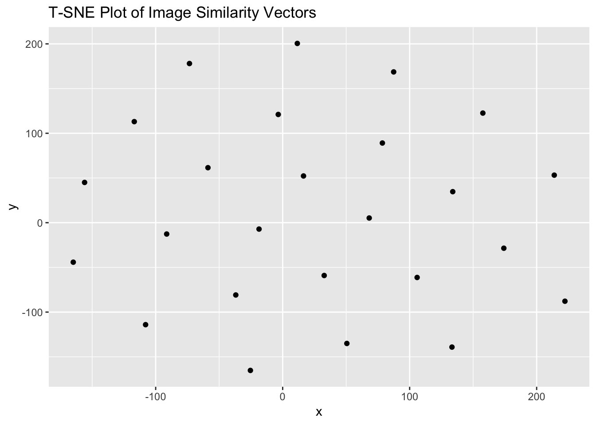

Affinity Propagation in R
Introduction
Having determined the visual similarity of the vectors, we first reduced the complexity of the resulting data with t-sne, a common first step when working with the output of neural networks. It is similar to principle components analysis, but better suited here because the data has a very high number of dimensions, and so better preserves the patterns.
In this notebook, we are then taking this data and exploring it for clusters. We use the ‘Affinity propagation’ technique. From our paper (2018):
Affinity propagation is a clustering algorithm that identifies exemplars among data points and forms clusters of data points around these exemplars. K-means is often used for clustering but it is sensitive to the initial random selection of exemplars, and does not necessarily select the best representation of clusters; in Frey and Duecke’s approach, all data points are considered as possible exemplars. This approach models the datapoints as a kind of network along which messages are passed recursively. From this, exemplars and clusters emerge (2007). An important difference between k-means and affinity propagation clustering is that for affinity propagation we do not need to specify the number of clusters in advance as we do for k-means
# import the data
library(jsonlite)
mydata <- fromJSON("image_tsne_projections.json", flatten=TRUE)We can begin by taking a look at the data like so:
## let's see what the data looks like
## in this example, we only loaded 25 images (demo)
## so it's a bit artificial, but carry on.
library(ggplot2)
g = ggplot(mydata, aes(x = x, y = y)) + geom_point() + labs(title = "T-SNE Plot of Image Similarity Vectors")
print(g)
 To the eye, there is clearly structure. So how many clusters? We first get the data ready for the affinity propagation algorithm by passing it to a new variable, and then running it through ‘apcluster’:
X <- cbind(mydata$x, mydata$y)
## affinity propogation
library(apcluster)##
## Attaching package: 'apcluster'## The following object is masked from 'package:stats':
##
## heatmapd.apclus <- apcluster(negDistMat(r=2), X)
cat("affinity propogation optimal number of clusters:", length(d.apclus@clusters), "\n")## affinity propogation optimal number of clusters: 4Finally, we can plot these clusters:
plot(d.apclus, X)